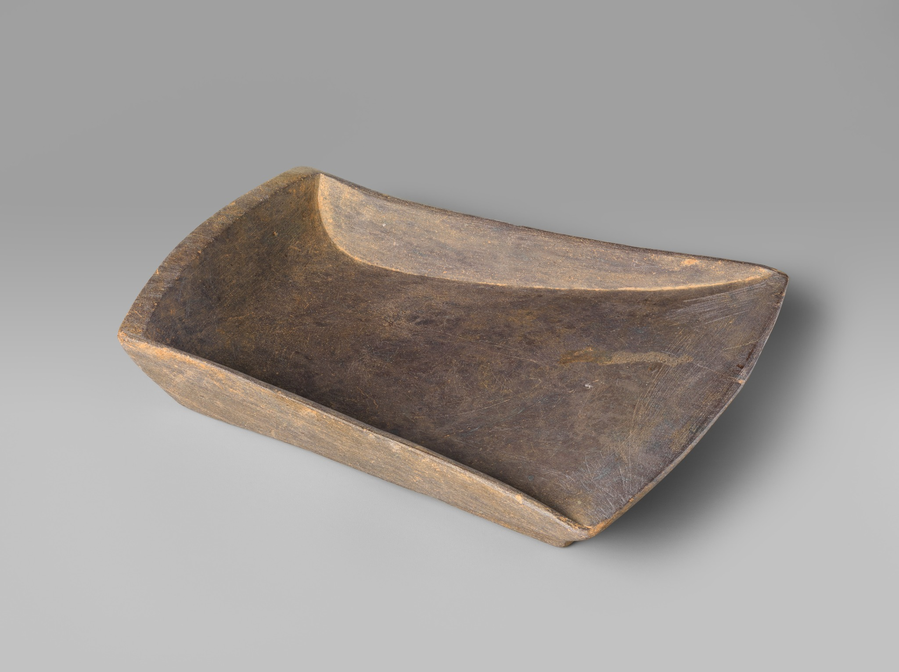

Participación
Convocatorias.
Un espacio para llamados a investigadores, recepción de artículos, actividades y otras oportunidades del CECH.
Inkstone in the Shape of the Chinese Character “Wind” · The Met · Public Domain
Estructura demostrativa
Convocatorias claras y archivables.
Los siguientes textos son ejemplos de diseño, no convocatorias reales. La versión definitiva puede mostrar estado, fecha límite, bases, anexos y formulario.
Abierta · ejemplo
Programa de Jóvenes Investigadores CECH 2026
Dirigido a estudiantes y egresados interesados en investigación sobre China. Aquí irían los requisitos, cronograma y bases oficiales.
Contenido demostrativoAbierta · ejemplo
Recepción de artículos para Cuadernos de China Antigua y Medieval
La página puede incluir línea temática, extensión, normas editoriales, fechas, correo de envío y documento de bases.
Contenido demostrativoCuando una convocatoria finalice, puede cambiar de estado a Cerrada y conservarse en un archivo histórico. Esto evita perder información institucional y permite documentar ediciones anteriores.